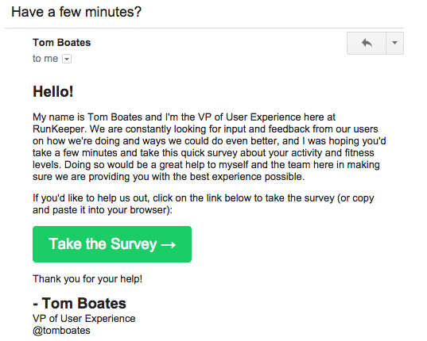
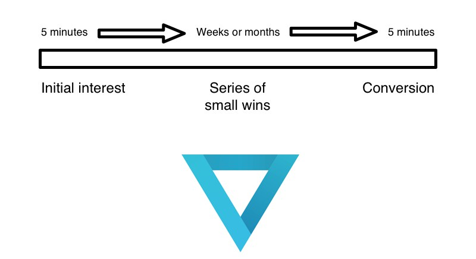
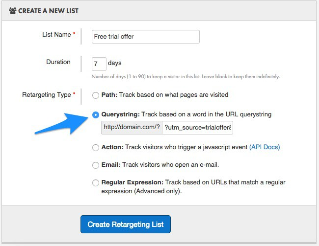
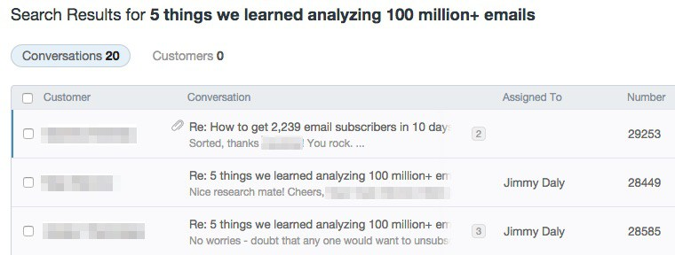

Update: Nearly 100,000 people enjoyed the original 20 email best practices. We decided it was high time to update this guide, so we’ve added 20 more suggestions to help you optimize your email marketing. The tips below are drawn from our customers’ best campaigns as well as our own experience.
When it comes right down to it, email marketing is all about getting the basics right.
Yes, you need to segment your lists and yes, you should upgrade your transactional emails, but every email marketer also needs to invest time in big picture strategies like positioning, voice, value and conversion optimization. The 40 tips below may seem basic, but you’ll find many at the core of the best email marketing campaigns out there. You’ll also notice that many of the examples employ five or more of these tips in a single email. For best results, apply liberally.
- 1. Create an exclusive club.
- 2. Show that you care.
- 3. Ask for feedback.
- 4. Use social proof.
- 5. Get personal.
- 6. Make conversion a habit.
- 7. Include downloads.
- 8. Tell readers what to do next.
- 9. Keep readers on their toes.
- 10.Use the same subject line every time.
- 11.Use referral codes.
- 12.Use buttons.
- 13.Overwhelm users with value.
- 14. Remind readers what you do.
- 15. Leverage your partners’ brand power.
- 16. Make people happy.
- 17. Tap into social trends and current events.
- 18. Say Thanks.
- 19. Make an announcement.
- 20. Gamify a process.
- 21. Use the 1-2-3 method.
- 22. Use the Inverted Pyramid Method.
- 23. Go for small wins.
- 24. Send a ‘squeeze’ email.
- 25. Send emails in the right time zone.
- 26. Personalize with dynamic content.
- 27. Leverage the Zeigarnik Effect.
- 28. Send a recurring email.
- 29. Use the unboxing technique.
- 30. Segment on signup.
- 31. Measure campaigns with scatter plots.
- 32. Steal like an artist.
- 33. Stop campaigns.
- 34. Send at least one great retention email.
- 35. Integrate with social media.
- 36. Replenish.
- 37. Ask people to reply.
- 38. Send progressively smarter emails.
- 39. Use all the data.
- 40. Hold yourself to a high standard.
1. Create an exclusive club.
Making your email subscribers feel special is a great way to generate excitement for the content or offers you send them. It’s also a powerful community-building tool.
Exclusivity can be subtle, like the Apple example below, or it can be overt, like Groove.
Whenever Apple launches a new product, customers camp outside their stores to get their hands on the latest device. By offering a pre-order, Apple can cash in on that excitement without putting additional stress on their retail stores. With free shipping as an added incentive, these emails will no doubt drive huge sales before the next iPhone is even released. (Within three days of the iPhone 6 launch, Apple had sold 10 million phones.)
Groove’s Alex Turnbull takes a more direct approach. He emails new posts out to blog subscribers before they are available to people who read via RSS feeds or social media.
“As a subscriber, you’re getting this link about an hour before the post goes live on our blog’s homepage.”
Each email he sends begins with the words “Early Access”.

It makes email recipients feel like they are part of an exclusive club because, well, they are! Over the course of that hour, Alex can collect feedback and make any changes he feels would improve the post as more people see it. We asked Alex about the strategy. Here’s what he had to say:
The early access emails help us build a better relationship with our readers. It’s a value-add on top of just getting the content each week. I’ve heard from dozens of folks who appreciate the exclusive look at the new content before we release it, and we even see people urging others to sign up because of that benefit.
We send emails every single Thursday. It gets people used to hearing from us, and our open rates are higher because of that. Even if you’re not writing new posts each week, you can still send useful emails to maintain that relationship.
The early access emails help us build a better relationship with our readers.

2. Show that you care.
Your email subscribers are getting dozens, if not hundreds, of other emails every day. They are constantly being asked to start a free trial, download an e-book or follow someone on Twitter.
There’s an overwhelming amount of noise in the inbox. Showing your users that you care goes a long way towards earning their trust. Squarespace, for example, takes a friendly approach to urgency. False emergencies – “LAST DAY TO SAVE!!!” – comes off as desperate. Squarespace acknowledges the reality of our busy lives and offers a chance for an extended trial.
Everyone gets busy and you may not have had enough time to evaluate Squarespace.
Buffer’s Kevan Lee told us that his best email advice is to “Delight your subscribers”. Dropbox took that advice to a new level with this email. They gave me 10x the storage space for the same price! Do you think I’ll open the next email they send? You bet.
Of course, this a major business decision, not just an email marketing tactic. But the decision reflects Dropbox’s mission as a company: to make their customers happy. Email is just an extension of their core beliefs.
Thanks, Dropbox.
3. Ask for feedback.
As long as you aren’t pushy, it’s okay to ask for feedback.
I get lots of emails from RunKeeper, but this is the first from Tom Boates, the company’s VP of User Experience. This is an interesting way to help users get to know the company they are supporting and it could also help users get a better product in the future.
“Doing so would be a great help to myself and the team here in making sure we are providing you with the best experience possible.”
If you ask for help, be genuine and people will respond.

Feedly takes a similar approach by introducing me to someone new in the company. They aren’t begging me to come back, they are simply asking what led to the cancelation. The company has earned a reputation for being trustworthy and innovative, so I was happy to offer candid feedback.
If you are going to ask for feedback, you need to make it dead simple. Dollar Shave Club, as we’ve written before, is fanatical about user experience. The subscription is easy, the blades are good and the marketing is captivating. Everything about Dollar Shave Club is a pleasure, including their survey emails.
The easier it is to leave feedback, the more people will do it.
4. Use social proof.
From the KISSmetrics blog:
- Over 70% of Americans say they look at product reviews before making a purchase.
- Nearly 63% of consumers indicate they are more likely to purchase from a site if it has product ratings and reviews.
Social proof is the reason sites like Yelp and TripAdvisor continue to thrive. Consumers trust what other consumers think. The same principle can easily be applied to email marketing. It’s best used subtly, as you don’t want to toot your own horn.
Look how FlightFox casually mentioned that 97% of customers would recommend the latest version of the service. That’s a stunning number, and it’s included in an email about a new blog post.
If you have a number like that to share, make sure everyone knows about it.
Many forums and communities take full advantage of social proof. Because they have active users, they can parlay engagement into more engagement. Quora, who we’ll discuss more in this post, does this beautifully. Readers can use the number of votes on a discussion to decide which link to click.

GrowthHackers takes a similar approach but with even more emphasis on their users’ activity. If a GrowthHackers discussion has 20 comments, you know there is good information being passed around.
If you don’t have a forum, consider including social share numbers in your newsletters. The effect is the same – readers want to know what their peers are interested in.
5. Get personal.
“Only strong people are comfortable talking about their failures.” – Hayes Drumwright, CEO of Trace3 (a $300 million company)
Email is a good opportunity to humanize your brand. The inbox is an intimate place, mostly used for personal conversation. Your presence there is a privilege, so do your best to write like a human. It’s okay to talk about challenges, obstacles, and even failures. Readers can relate since they are likely facing similar situations with their own lives and businesses.
In the email below, Noah Kagan discusses a very personal conversation he had with a friend about his blog. How many marketers have ever felt overwhelmed with their work? All of them!
The post goes on to offer some ways to deal with the challenges of growing a blog. Identifying a pain point, then offering a solution is an age-old strategy that’s still effective today.
We’ve used this strategy internally to collect feedback from blog subscribers. This was part of a (very successful) experiment to get to know our readers.

Read our guide to sending personal emails here.
6. Make conversion a habit.
Recently I was chatting with David Sherry, co-founder of Death to the Stock Photo, about his company’s email strategy. They’ve grown their business almost entirely with email (we’ll look at an example later in this post) and he offered some magical advice:
“Make conversion a habit.”
It’s simple, but seriously profound. He builds opportunities for small conversions into every email so that people get used to taking action. This can be as simple as “Follow me on Twitter” or as significant as “Upgrade your account.”
Death to the Stock Photo includes free, downloadable stock photos in each email. People are used to clicking his emails because there is always value in converting.

Buffer is great at this too. In the transactional email below, they are aiming for a small conversion: user engagement with their app. By creating pre-made tweets, they make it as easy as possible for the user to convert. The conversion doesn’t directly result in revenue, but it does get users in the habit of 1) clicking their emails and 2) using the app.

EmailInsights builds in even smaller calls to action. In the email below, they are looking for feedback on their product, but also ask the user to connect with the founder, Chuck Blake, on LinkedIn.
Again, the conversion doesn’t directly create revenue but if the user does it, they will be exposed to more content from Email Insights and they can get a feel Chuck’s experience and personality.
7. Include downloads.
The number of emails sent and received with attachments increased 43% on daily basis percent from 2009 to 2013, according to Radicati. During that same period, emails without attachments increased by 27%.

Why?
Email is the perfect platform to exchange files.
Marketing emails usually don’t contain files because the focus is on messaging, calls to action and design. Why not add some utility to your emails?
As discussed above, Death to the Stock Photo does this beautifully. They only send one email per month, but each contains a downloadable file of stunning images that you can use on your blog or in your email. (Read more about how Death to the Stock Photo built a profitable business with email.)
Their emails delight users not only because of the stylish design but because of their utility. This email empowers the user to take action and the habit-forming nature makes it easier to ask users to upgrade to their premium level.
8. Tell readers what to do next.
The cardinal sin of conversion is failure to make the next step abundantly clear. How can someone convert if they aren’t sure what to do?
Conversion Rate Experts stress this over and over again: “Be clear and direct with your users, telling them exactly what you’d like them to do.”
Look how seriously Backlinko‘s Brian Dean takes this advice. This email was sent immediately after registering for a webinar and he tells me exactly what to do next.
The idea is simple: just add the webinar to your calendar. Not only does this reinforce the behavior pattern of clicking Brian’s emails, but it also increases the chances that the registrants actually attend the webinar. Once it’s on the calendar, they will get alerts from their phone and/or computer … it’s like free marketing.

Answering the question “What should I do next?” is also a great way to boost engagement with a SaaS app. Dropbox asks you to sign in since they know their in-app onboarding is so good. They also include a link to their getting started guide.

In KISSmetrics’ case, a new user has to take the next step or they won’t get any value from the tool. Clearly, they’ve heard this question before, which is why the present it in bold text and in quotations, as if the reader is asking it out loud. They keep the language very simple, then present a button, with a contrasting color and friendly copy, to move the user onward.
The next thing you should do is create events so that we can start measuring important areas of your business.

9. Keep readers on their toes.
This tip is unconventional, but it’s proven to work.
On one hand, you want your readers to know what to expect in your emails. In HelpScout’s case, that means a great blog every Wednesday without fail. In ProductHunt’s case, that means five new products every day. The user never knows what those products will be, but they have come to expect value from these emails, which is why they are opened at such a high rate.
ProductHunt is a email-first startup, meaning that it started as a newsletter and later grew into a website, podcast, and mobile app. While it might sound counterintuitive to keep readers on their toes, the strategy has been proven by ProductHunt as well as other companies, like Timehop and iDoneThis.
First Round Review published a detailed account of ProductHunt’s growth which we highly recommend checking out.
“Even though the email was super basic, it gave me validation that people cared about this content,” says Hoover. And when he eventually decided to build the site, the email list became the most important asset and springboard for driving traffic and keeping people coming back again and again. It’s continued to swell as Product Hunt has gained momentum, a constant source of new fans and marketing opportunities.
Now, the examples.
ProductHunt goes big on email. Every email they send is loaded with new apps, tools and products that are validated with social proof. You never know what you are going to get, but you always know it’s going to be something really good.

Quora’s emails are like a box of chocolates … you never what you’re gonna get next. Here are some recent subject lines from Quora digest emails. They range from bizarre to practical, but they are always intriguing.

This strategy is easier when you have user generated content like Quora and ProductHunt. Quora also employs social proof in their emails to validate the quality of the links they include.

10. Use the same subject line every time.
This is another tactic that might be considered unconventional, but it’s actually very effective if your users trust you and your brand. It’s a good idea to do this with transactional emails, like receipts, to make it very easy for users to find and reference them. But the tactic can be useful for newsletters and marketing emails too if you send them on a daily, weekly or monthly basis.
Remember, you want your recipients to look forward to your emails so much that it doesn’t matter what the subject says.
Alexis Madrigal sends his newsletter, 5 Intriguing Things, every single business day.

That’s a lot of emails and it would be a struggle to come up with a new subject line every single day. More importantly, though, Alexis’ newsletter is highly anticipated by its recipients so the subject line doesn’t matter. It’s delivery each morning is familiar but still exciting.

PetaPixel, who sends a massive daily newsletter, does this but appends the date to each newsletter to make it easy for readers to keep track of them.

11. Use referral codes.
Referral codes work because everyone wins: the referrer, the referree, and the business.
According to ReferralCandy, 83% of satisfied customers are willing to refer a product or service but just 29% actually do. If you can motivate them to refer friends and family, it makes conversion a breeze: 92% of consumers trust referral over ads.
Adding referral codes to your emails is one way to turn every email into a sales opportunity.
Uber kills this. This is the footer of every Uber receipt (and here’s a more detailed look):

Not only is it fun get credit towards your next ride, it’s a super smart strategy that has helped Uber grow fast:
95% of all our riders have heard about Uber from other Uber riders. Our virality is almost unprecedented. For every 7 rides we do, our users’ big mouths generate a new rider.
Simply amazing.
Dollar Shave Club puts even more emphasis on referrals in their emails:

Why would anyone not do this?
Well, you must have complete confidence in your brand to attempt to turn customers into salespeople. They, in turn, must be confident enough in your product to tell friends and family about it. If your product rocks, including referral codes in your emails is a no-brainer.
12. Use buttons.
Here’s the simplest email marketing advice you’ll ever receive:
If you want people to click, use buttons.
There are plenty of case studies on the topic. Campaign Monitor, for example, got a 28% increase on click-thrus when they A/B tested emails with and without buttons.
When it comes to writing copy and designing buttons, we always refer to conversion expert Joanna Wiebe:
What should my button say?
A great rule of thumb when writing a call to action is to make your button copy complete this sentence: I want to ________________What should my button look like?
- A 3D effect
- A contrasting, non-grey color
- Feedback on hover (e.g., different color)
- Whitespace around it
- An arrow pointing to it with instructional copy
Examples of this in email marketing are abundant, but here are few designs we really liked.
This Evernote email employs soft colors and encouraging language. It tees up the call to action by explaining why Evernote is so powerful before coming on strong with a bold, green button.
Read more about Evernote’s emails here.

In this example from CreativeLive, there is no mistaking what they want you to do. The call to action is bold, simple and direct.

13. Overwhelm users with value.
Good examples of this are too massive to include as screenshots. Click the links below to see them.
Impressive, right?
The first thing we should say about these emails is that they aren’t for everyone. The second thing we should say is that they are for someone.
Think very carefully about your niche before creating and sending an email this massive. Here’s why these emails work for their respective audiences:
- In PetaPixel’s case, they are appealing to hardcore photographers, people that eat, sleep and breath gear, software and reviews. The more, the better.
- TucsonTopia is strictly a local publication. Their weekly email is super valuable because it contains tons of information about timely local events.
- Brain Pickings is a different kind of beast. Every email is an intellectual adventure. Maria Popova pours her heart and soul into it and has grown a massive audience as a result.
Again, not for everyone it’s something to consider if you think your audience would embrace it.
14. Remind readers what you do.
When we asked Belle Beth Cooper for her best email advice, here’s what she told us:
Don’t expect people to remember what you do – it’s your job to remind them, every time. Every email we send about Exist, whether it’s to existing users or people who signed up for our mailing list months ago, includes a link to remind them what Exist is. And that link gets clicks every time.
It’s almost too simple. When we checked out the emails from her budding startup Exist, we found she does exactly that.

This is the simplest advice in this guide and there is nothing to lose by implementing it immediately. Don’t overlook the little things.
15. Leverage your partners' brand power.
If your product or service integrates with other products or services, you are sitting on top of a gold mine of brand power. Leveraging the power of other brands is a great way to accelerate the authority of your own.
Buffer creates case studies of some of their biggest customers to appeal to enterprise customers. In the example below, they show how Business Insider grew its Facebook presence.

Zapier and IFTTT, services that rely almost entirely on partners to attract users and grow, emphasize other powerful brands in most of their emails.
In Zapier’s case, Highrise integration adds valuable utility to any of their users who also use Highrise. It makes both services more valuable.

IFTTT is growing fast – they just netted a $30 million investment – but Nike is far bigger. In fact, Forbes ranks Nike as the world’s 24th most valuable brand. If you can use their brand power to boost your own, why wouldn’t you?
Notice also that IFTTT lets images do the talking for them. The example newsletter below contains just eight words. We asked IFTTT co-founder Alexander Tibbets about the strategy and he explained that each recipe has a story that can be told with imagery.
We love to show rather than tell. IFTTT is designed to be a visually engaging experience, so it’s only natural to approach our newsletter in the same way.

Feedly did this and invited users to join an exclusive club of beta testers. Well done.

16. Make people happy.
Generosity is one of the most overlooked email marketing tactics.
It’s not that hard to make people happy. How many assets do you have that you could use to make an email recipient’s day a little brighter? If you aren’t ready to give something away, simply say something nice, tell an uplifting story or just ask how they are.
This email from Gazelle is a great example of a transactional email with a marketing twist. Gazelle owes me $94, so it’s going to be easy to make me happy, but they took the time build excitement into the email. The subject line – “Your happy email is here!” – would catch anyone’s attention and the bold treatment of the dollar amount reinforces just how valuable this email is.
Notice, also, that they included a referral link and a one-question survey. This is how transactional emails are done.
Starbucks is great at this as well. For every 12 drinks you buy, you get one free and this is the email they send. Again, it’s a transactional email chock full of email best practices. Look at all the other tactics it employs:
- Includes referral link (#11)
- Tells me what to do next (#8)
- Delights the recipient (#16)
- Reminds me that I’m part of an exclusive club (#1)
- Includes links to follow on Twitter and Facebook (#6)

17. Tap into social trends and current events.
Urgency can seem desperate, but timeliness is always powerful.
Tapping into current events or seasonal trends is a good way to encourage readers to open and click emails since their value is passing. Here’s another example from Gazelle, who always uses Apple events as a marketing opportunity. Apple creates the buzz for them, and they cash in with strong offers and timely marketing.
The messaging is clear: “Help us help you.”

Here’s another great example from the health and fitness website Greatist. Each fall, Starbucks offers the Pumpkin Spice Latte. It’s extremely popular with customers (even if it’s not the healthiest drink) and Starbucks makes a big deal about the limited availability of the drink. Greatist recognized the buzz as a great opportunity to offer healthier alternatives. You can’t send this email in March, it only works because of the season and the buzz created by Starbucks.

18. Say thanks.
Saying thank you is the easiest, simplest way to humanize your emails and evoke emotion in the recipient. Harvard Business Review explains why:
Saying “thank you” – sincerely and with heart – feels good. Not just to the person receiving it, but also to the person offering it. And that’s part of work too. It’s hard to remember, as we process our hundredth email, that behind each message is a person.
If you are grateful for your subscribers, users, and customers, let them know. You don’t have to dedicate an entire email to it (like the examples below) but you can build gratitude into every email you send.
Simple, a banking service startup, sent me this email after I requested an invite to their platform. This came in place of a welcome email and it made a great first impression of the company.

Outbrain sent me this message to let me know that their platform had reached 500 million unique users. That’s an impressive milestone – and valuable social proof – that absolutely warrants an email. This message isn’t designed to convert new users or drive revenue, it’s simply a positive reflection of the Outbrain brand.

Trello recently reached 5 million users and sent this email to make the announcement. They took it a step further by offering a free month of Trello Gold, their premium level. They also incorporated a referral program to help spread the word on their achievement and their paid plans.

19. Make an announcement.
Your users expect product update emails. The problem with most announcement emails is that they are either a) too salesy or b) too boring. Creating an email loaded with utlity and marketing value is no easy task but if you know these types of emails get opened, you need to put in the extra effort.
Take a look at the Wunderlist email below. The update is exciting but look at the language they use in the introduction:
As a registered Wunderlist user we wanted to let you know that we’ve just released a major new update, Wunderlist 3.
They are reminding the recipient that they are part of an exclusive club. The email builds on the excitement by explaining just how valuable the update is, then brings it home with a strong call to action in a bold button. (Like most of the emails in this guide, they are using several of our best practices.)

KISSmetrics take a more low-key approach. Instead of going for the “wow”, it’s almost like they are saying, “A brand new interface for our innovative app? No problem.” Once you get to know the folks at KISSmetrics, you understand why cool products like this are an expectation.

I like this example from Google Apps because it focuses entirely on value. They use impressive language like “unlimited storage” and “infinite space” to communicate that what they are offering is seriously awesome.

Postach.io uses the introduction of their premium service as an opportunity to get early adopters in the door. They also use the email as a chance to thank the people that gave input on their tool and sign the names of each of their team members.

It’s no accident that Postach.io sends great emails. We reached to their Community Manager, Caleb McIntyre, who shared his five rules for crafting effective emails:
- Be personal: Speak on a first-name basis and share news as though you are just a fellow product user, not an employee.
- Be relevant: Send triggered messages based on a user’s actual actions.
- Be anticipated: Don’t send mass messages unless you know that each receiver can actually use the info you’re sending them.
- Keep it short: Focus on quality over quantity.
- Converse: Always offer a warm invite for people to ask questions and send something back to you.
20. Gamify a process.
There is a reason that video games cause some people to actually become addicted. Games, and their rewards, reinforce behavior that users want to repeat. Players earn achievements and unlock new levels, only to be sent out on new quests to earn and unlock more. There is some interesting pyschology at play here.
Marketers use gamification to attempt to turn behavior into habit. Nir Eyal, an expert on habits and behavior, has written extensively on behavior design:
Everyone suddenly seems interested in messing with your head. Gamification, Quantified Self, Persuasive Technology, Neuromarketing and a host of other techniques offer ways to influence behavior. At the heart of these techniques is a desire to change peoples’ habits so that behavior change becomes permanent.
Read way more about that here.
Using gamification techniques in email is an interesting way to get users in the habit of opening and engaging with email. We already talked about Starbucks use of stars to encourage custoners to buy more often. In addition to awarding stars for buying a drink in a Starbucks store, they also offer stars for other things. In the example below, they are offering three extra stars for buying a bag of Starbucks coffee at a grocery store.
The more stars, the more free drinks. Starbucks uses stars to get customers to do all kinds of things – come in after 2 pm, buy a sandwich, try new products, etc.

The reason TripAdvisor is such a great website is because they’ve taken social proof to a new level. Reviews are the lifeblood of the site and they use gamification to encourage users to write reviews of places they’ve been.

What do badges mean for users? Nothing really, minus recognition for their contribution to the community. People find TripAdvisor so helpful, however, that they write reviews to pay it forward, according to Forbes.
[Adam Medros, TripAdvisor’s VP of Global Product] says that awarding regular contributors status designations and levels cannot be over-emphasized. “It is an incredibly successful and powerful program our marketing team put into place the last few years around recognizing and creating this desire to come back and keep up your status and keep contributing.”
Notice that TripAdvisor taps into social proof to help convince people to contribute: “If 170 million other people have written reviews, maybe I should too.”

21. Use the 1-2-3 method.
21. Use the 1-2-3 method.
You might know what to say in an email, but aren’t sure how to say it. Fear not, the 1-2-3 method is here to save you. It’s a tried-and-true email format that promotes action.
All you need to do is tell the recipient the next three steps. The steps must be crystal clear, as providing an obvious path eliminates the anxiety of the unknown. Now that you’re aware of this technique, you’ll start noticing it in your inbox all the time.
It works especially well in onboarding campaigns and welcome emails. Twitter is one of my favorite examples. They match each number to a visual example.
You don’t actually need to use numbers. Three bullet points or sub-headers can work as well. HOLSTEE keeps it simple with plain and links.
While three might be the optimal number for some, the format is more important than the actual number. The key is to not overload people with information or tasks. Sticker Mule uses four to good effect.
The strategy works in HTML emails as well. Pinterest provides three simple steps to get new users started. As a business built on visuals, their emails stay consistent with their branding and imagery.
Read more about the 1-2-3 method here.
22. Use the Inverted Pyramid Method.
22. Use the Inverted Pyramid Method.
There are a lot of things that get in the way of a great email. Copy, content and design come to mind. That sounds counterintuitive, but users need as little friction as possible. We came up with a simple model called the Inverted Pyramid Method to help keep your emails focused.
Highly focused emails don’t rely on design, images or copy. They rely on tone, timing and clarity. And that creates a real advantage for businesses smart enough to send them.
Let’s take a look at some examples. (And in case you haven’t seen this before, here’s a good example of what not to do.)
{kind=link}
Nike puts this strategy to good use in a Black Friday email. They grab your attention, then guide your eyes towards the button. There is nowhere to get lost in this email.

Help Scout takes the strategy even more literally. Like Nike, there is very little copy – just 32 words including the button text. Every word brings the user a little closer to click.
Often, less is more. Use the Inverted Pyramid Method when you need your emails to spark action.
23. Go for small wins.
Your business – and every business for that matter – is powered by small wins. Marketers often ask for too much from potential customers. Big wins like conversions and upgrades are earned over time. Don’t be surprised when you ask your email subscribers to upgrade and only 0.001% convert. Instead, think about building momentum. Asking subscribers to read a blog post or follow you on Twitter is a bigger deal than you think. And though it’s a small win, it’s a step in the right direction.

The Small Win Email is one that asks the recipient to take a minor step. This strategy is particularly useful in onboarding campaigns and newsletters. Here are a few examples.
Brian Dean asks new subscribers to reply to his welcome email with something they are struggling with. This doesn’t drive sales, but it does give him really useful data for future marketing.
Death to the Stock Photo offers a premium plan, but that’s not what they’re selling here. As a stock photo company, Instagram is the perfect platform to engage with their users.

Read more about how to use small win emails in retention and lifecycle campaigns.
24. Send a 'squeeze' email.
24. Send a 'squeeze' email.
If you’re using event tracking to start and stop your email campaigns, a squeeze situation is common. It happens when a user is stuck between two events.
Abandoned cart emails are a good example. A customer adds items to their cart but doesn’t check out. This strategy is highly useful for SaaS businesses as well.
Take Strava. If a user has `Signed up` but hasn’t `Recorded first run`, the marketing team can create a segment of people that triggered the first event, but not the second. Those people fall into a very specific place in the customer lifecycle, so they can be sent highly targeted emails. In the example below, Strava asks users who have yet to record a run to enter a monthly challenge.

Airbnb’s retention email is another classic example we’ve talked about several times on this blog. When a user Views listings but doesn’t book, they send an email with recommendations in the same area and price range.
{kind=link}
Once you dive into event tracking, it’s a good idea to track as many events as you can. You’ll start to find that users are almost constantly between two events, which give you the chance to send a targeted squeeze email.
25. Send emails in the right time zone.
25. Send emails in the right time zone.
Don’t make the mistake of prioritizing one time zone over another.
Most marketers approach email timing this way and it’s far less than ideal. They test send times, then choose the single time that delivers the most opens and clicks. That only works if you customers are all in the same time zone. Otherwise, there’s a better way.
Vero’s time zone feature allows you to send newsletters and campaigns to users in their own time zone. Instead of dropping an email at 10 am in New York and 11 pm in Singapore, your emails can arrive at 10 am regardless of the user’s location.
26. Personalize with dynamic content.
26. Personalize with dynamic content.
This topic can be a rabbit hole, so let me quickly show you the four levels or content personalization:
Segments and Static Content
Divvy up your lists into segments and send content based on the group’s common interest. This is the baseline.
Insert Basic Customer Merge Tags
Merge tags are placeholders that are replaced by actual content when the email is sent. Hey {{user.name}}! becomes “Hey Jimmy!”
Collect and Insert On-Site Data
Use a tool like Vero to capture events – pages viewed, product usage, etc. – then use insert event attributes – product images and details, URLs, etc. – into your emails.
Abandoned cart emails are a good example of using this on-site activity. An event is tracked – Viewed Cart – with an event attribute that is an array of all the items in their cart – including, for example, a `6″ Service Boot`. You can use the event to trigger the email – Send after 24 hours of inactivity – and use the event attribute to populate the product field. You can even use the product image (another event property) in the email.
Pull Data From Your Own Database
This is where dynamic content gets really interesting. We’ll use Vero customer Uniplaces as an example.
Uniplaces is a marketplace for students to book accommodations and for landlords to find tenants. When users sign up and begin searching for a house or apartment, Uniplaces tracks events and event properties that allow them to send impressive email campaigns.
When a logged-in user views a listing, they record an event – Views listing – and an event property – event.city. If the user fails to complete the next event – Completes booking – Uniplaces sends an email with suggested listings.
This is done by pulling in data from an external API (which you can read all about here).

27. Leverage the Zeigarnik Effect.
27. Leverage the Zeigarnik Effect.
Psychologist Bluma Zeigarnik’s research shows that humans are bothered by loose ends. The Zeigarnik Effect is that uncomfortable feeling we get when things are left unfinished. That could be the cliffhanger in a season finale of your favorite TV show or the half-written proposal that’s been sitting on your desk for a week.
The Zeigarnik Effect is not only easy to understand – we’ve all experienced and acted on those feelings – it’s also easy to apply to email marketing.
The easiest place to start is progress bars. These provide context to your user – it helps them understand where they are in a process and how much more there is left to accomplish.
Evernote employs a low-tech version of this in the subject lines of their onboarding emails.
Notifying users when there is an issue with their account is another clever way to use the Zeigarnik Effect. Mint does an exceptional job with these messages.
Discover a few more ways to leverage the Zeigarnik Effect here.
28. Send a recurring email.
28. Send a recurring email.
Recurring emails are an extension of your product. They usually arrive in the form of a usage report and they cannot be treated like promotional emails. Without a clear focus on user experience, recurring emails are guaranteed to fall flat on their face.
Grammarly sends one of the best recurring emails we’ve ever seen. We liked it so much we wrote an entire case study on this one email. They pull data from their users’ weekly activity and summarize it in an email. This is the only place Grammarly users get these metrics, so it’s truly an extension of the product.
“The weekly reports product is meant to be our bread and butter from an email perspective,” says Grammarly’s head of product marketing Drew Price. “It’s a retention/engagement hybrid.”
{kind=link}
In addition to presenting the data, you can use it to make recommendations for unused features or new products. If Grammarly notices I’ve made a few mistakes with commas, they recommend content to educate me on proper usage.
Or, if they record no data at all, a retention email arrives in place of the report.
Read more about how Quora, Mint, SumoMe and Buffer use recurring emails in their marketing.
29. Use the Unboxing Technique.
29. Use the Unboxing Technique.
Consumer anxiety is the baseline. If you work in marketing, this is your starting point. Your potential customers are skeptical of you, your product and your claim that it will make their life easier.
The key to solving almost all anxiety is clarity. If people know what to expect, they are more likely to kick the tires and ultimately become a customer. That’s where the Unboxing Technique comes into play. This simple strategy involves previewing your product or service right in the inbox.
Dollar Shave Club is a good example. They literally unbox their product in their promotional emails.
You can do this with software too. Elevate shows previews of their mobile app to give new users an idea of what to expect.

Gumroad does the same thing, but uses a GIF to give a quick demonstration.

30. Segment on signup.
30. Segment on signup.
Any and all data should be used to personalize your emails. When it comes to newsletters, it’s a good idea to ask a few simple questions even if you aren’t ready to use the data just yet.
Strava is a simple example. Their tool helps runners and cyclists track their workouts. When new users signup, Strava asks if they prefer to run or ride.
Then, they send sport-specific follow-up emails.
Airbnb does the same thing when people inquire about their business travel program.
IKEA takes segmentation very seriously. When you subscribe to their newsletter, they ask a series of optional questions. (This is just the tip of the iceberg. See the full series here.)
The more you know, the more relevant the emails can be.
31. Measure campaigns with scatter plots.
31. Measure campaigns with scatter plots.
It’s hard to visualize the success or failure of an email campaign. Pulling data into a spreadsheet makes this much easier. Here’s a look at a process we use internally to measure our email campaigns.
First, pull a few data points into a spreadsheet. You’ll need the time delay (i.e. when was the email sent), open rate and click rate.
Using the chart feature in Google Sheets, create a simple graph where the time is represented by the X-axis and open/click rates by the Y-axis. Then, use a polynomial trendline in the Customization tab to create a scatter chart.
The final result will look something like this:
This is a great way to visualize momentum. Look for emails with low open rates and aim for better subject lines and more interesting content or calls to action. You can borrow a few best practices from this very post – social proof, the Zeigarnik Effect or the Unboxing Technique to name a few – to boost click and conversion rates.
32. Steal like an artist.
32. Steal like an artist.
You don’t have to start building an email campaign from scratch. When you need a bit of inspiration for a new campaign, just look at the great brands already in your inbox.
Set up a label (in Gmail) or folder in your inbox and title it “Swipe File.” Anytime you see a great subject line, a good offer, a beautiful design or great copy, just add the message to your swipe file. Pretty soon, you’ll have a repository of inspiration that you can tap into when you are working on your own campaigns.
To make this even more powerful, set up individual labels or folders depending on why the email caught your attention. Example: Create a folder for “Great Subject Lines” so you’ll always remember why you set aside the email for later. Add a few emails each day and, soon, you’ll have hundreds of ideas for writing better emails.
Here’s how my swipe file looks:

When you receive behavioral emails, spend a few minutes reverse-engineering them. Why did you receive it? Where did the data come from? How long after your last interaction was it sent?
Don’t re-invent the wheel when your own inbox is already full of good ideas.
33. Stop campaigns.
33. Stop campaigns.
Autoresponders are a gift to email marketers when they are used correctly. The primary challenge is that emails are sent on a schedule regardless of what the user does in the meantime.

Imagine if Twitter sent a welcome campaign without accounting for each new user’s behavior.
- Day 1: Welcome!
- Day 2: Here’s some popular people to follow
- Day 3: Send your first tweet
- Day 4: How to use and follow hashtags
If the user signs up, follows a few friends and sends a tweet on day one, the entire campaign is rendered irrelevant. This creates a bad user experience.
To prevent irrelevant emails, consider stopping your campaigns when users take certain actions. Vero customers can use our conditional filters to remove users before each send.

Stopping is the new starting. Instead of sending tons of emails, send a handful of highly targeted, relevant messages.
34. Send at least one great retention email.
34. Send at least one great retention email.
Whether you run a blog or an online store, retention is a constant concern. You can use email to plug holes in your funnel and keep users engaged.
We recommend starting with a single great retention email. By creating just one, you’ll learn what works and what doesn’t. Before you create a series of retention emails for all your customers, find a place where you’re weak and run a few tests.
A great place to start is inactivity. Use Vero or another tool to track logins, then trigger emails when a user has been inactive for 28 days. This segment will look something like this:
As users enter this segment, you can trigger a retention email. If you need some inspiration, check out these 15 examples.
35. Integrate with social media.
35. Integrate with social media.
There are a number of ways to integrate email and social media, but here’s a look at one of our favorites: retargeting subscribers on Facebook.
The first thing you need to do is queue up a great email. Let’s say you’re offering a free trial to people who downloaded an e-book. Segment your list in your email provider and get the content ready to send.
Use Google’s URL Builder to add parameters to any links in the email. As an example, you could use freetrialoffer as the campaign source, email as the medium and retargeting as the campaign name. Append these parameters to the links in your email. It will look like this: /?utm_source=freetrialoffer&utm_medium=email&utm_campaign=retargeting
Next, you’ll need a tool like Perfect Audience. Use the querystring filter to identify people that came from your campaign and show them targeted ads based on your offer.

Read about other ways to integrate email and social media here.
36. Replenish.
36. Replenish.
Hardly anyone is using the replenishment email strategy. And if you sell items that need to be replenished, you are leaving recurring revenue on the table.
We’ll look at a few examples but first, what exactly is a replenishment email?
A replenishment email is one that simply reminds customers to re-order items when they run out. If you buy dog food from Petco, they should (but don’t) remind you to order more based on the size of the last bag you ordered.
ProFlowers is one business that has replenishment emails down to a science. They know that flowers are often given as gifts for birthdays and holidays. These occasions occur on a regular basis, meaning ProFlowers can predict when you’ll need to order again.
The key is to provide a helpful cue at just the right moment. This is low-hanging fruit for almost any business, whether you sell holiday gifts, monthly or annual subscription plans, or even consulting.
37. Ask people to reply.
37. Ask people to reply.
Email is a platform for two-way communication. Unlike other forms of marketing and advertising – television, podcast and banner ads to name a few – users are actually used to responding to emails.
Asking people to reply to your emails is a tactic that doesn’t scale, but you can learn a ton in the process. Here’s an example of an email we automate when new users start their first campaign:
Even if you don’t solicit replies, you can let people know that you accept replies. FullContact bucks the trend of sending from a “noreply@company” address and sends their product update emails from “pleasereply@fullcontact.com.”
People are likely already responding to your emails. If you aren’t checking those responses, track them down. If you send a weekly newsletter to thousands of people, there is intel in those responses that can help you close leads and improve your content.

At Vero, we filter responses to our newsletter through Help Scout so that we can assign the right team member to handle each one. Most responses are “Out of Office” replies but each week, we find a few people who need help getting started with Vero or have ideas for improving the newsletter.
38. Send progressively smarter emails.
38. Send progressively smarter emails.
Every email you send should be better than the last.
TripAdvisor’s emails get progressively better as they learn more about each user. New users receive generalized information based on the little TripAdvisor knows about them. Take this email, for example, which suggests destinations based on my home airport.
Knowing where I’m traveling from is a good start, but it’s the destination that matters. TripAdvisor can show me where to stay and how to get there if they can figure out where I’m headed. As they collect data from on-site behavior and email clicks, the emails start to get smarter.
Once they can be reasonably sure about the destination, emails like this one begin to arrive.
Then, price alerts based on the destination and dates.

Soon, they are suggesting restaurants and activities, inquiring about reviews and suggesting more destinations based on your Facbeook friends’ activity. In our epic TripAdvisor case study, we looked at 20 emails to see how they were applying their learnings to subsequent emails. It was incredible to watch the emails get more and more refined – dive into it here.
39. Use all the data.
39. Use all the data.
If you’re new to behavioral email, here is a quick primer on capturing events.
When you record an event – let’s say viewed product for example – you can also collect event attributes. If an event is a noun, attributes are all the adjectives that describe it. Here are just a few examples of attributes you can collect based on the event viewed product:
- sku number
- product name
- product color
- product price
- product image
- product category
- time
- location
- URL string
- referring page or source
All of this data is recorded with the event and added to the user’s profile. From here, you can insert attributes in an email – imagine referencing a product’s image, color and price – and use it to build segments – think of creating a segment of all users who have viewed purple shoes in the last 14 days.
When it comes to recording data, don’t be shy. Record as much as you can now so you can put it to good use later.
40. Hold yourself to a high standard.
40. Hold yourself to a high standard.
Do you watch TV for the commercials?
Probably not.
Do you check email for marketing newsletters?
Doubtful.
As Samuel Hulick wrote on the Help Scout blog, “On the highway to user/product love, [emails] are road signs providing timely guidance, not annoying billboards.”
Email isn’t about selling. Receiving marketing materials is a side effect of our dependence on email.
Despite all you’ve heard about email as a channel, it’s just a platform for communication. It’s a great place to learn about what your leads and customers want and provide helpful cues.
Hold yourself to the highest standard when it comes to sending marketing emails. Focus on identifying pain points in the customer lifecycle and using email as an extension of your product or service. The more helpful you are, the more you’ll be rewarded.
Have any questions? Drop a note in the comments.